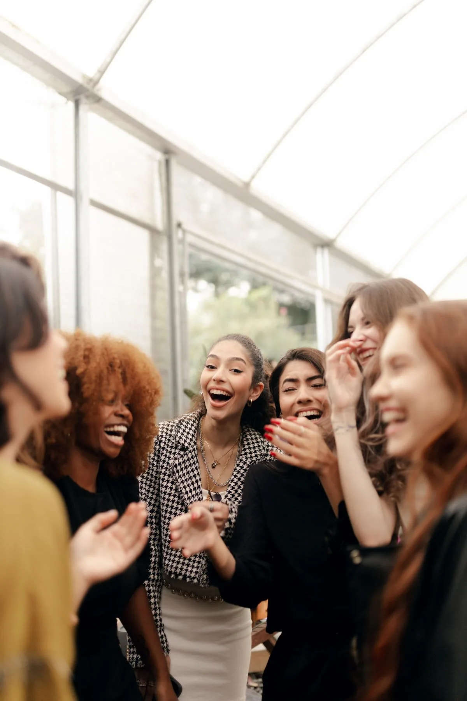
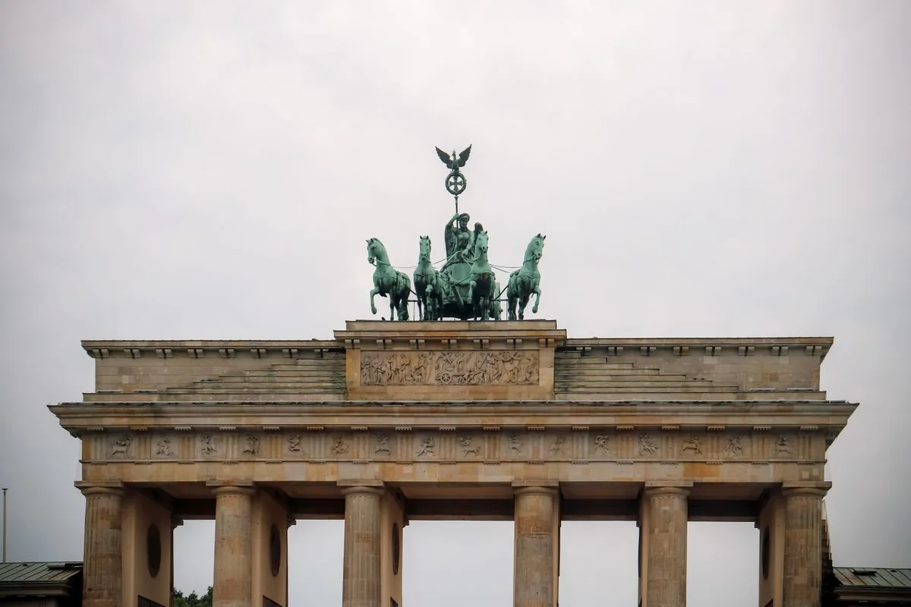
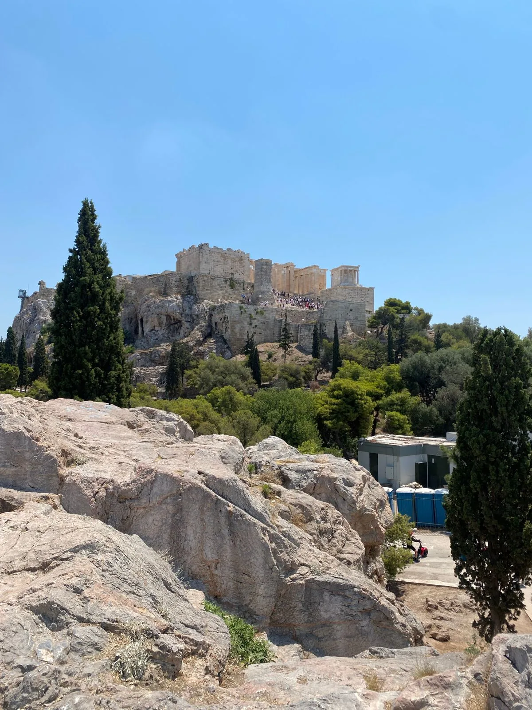
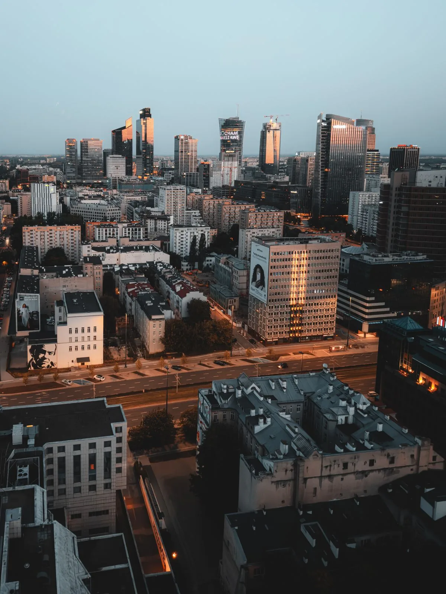
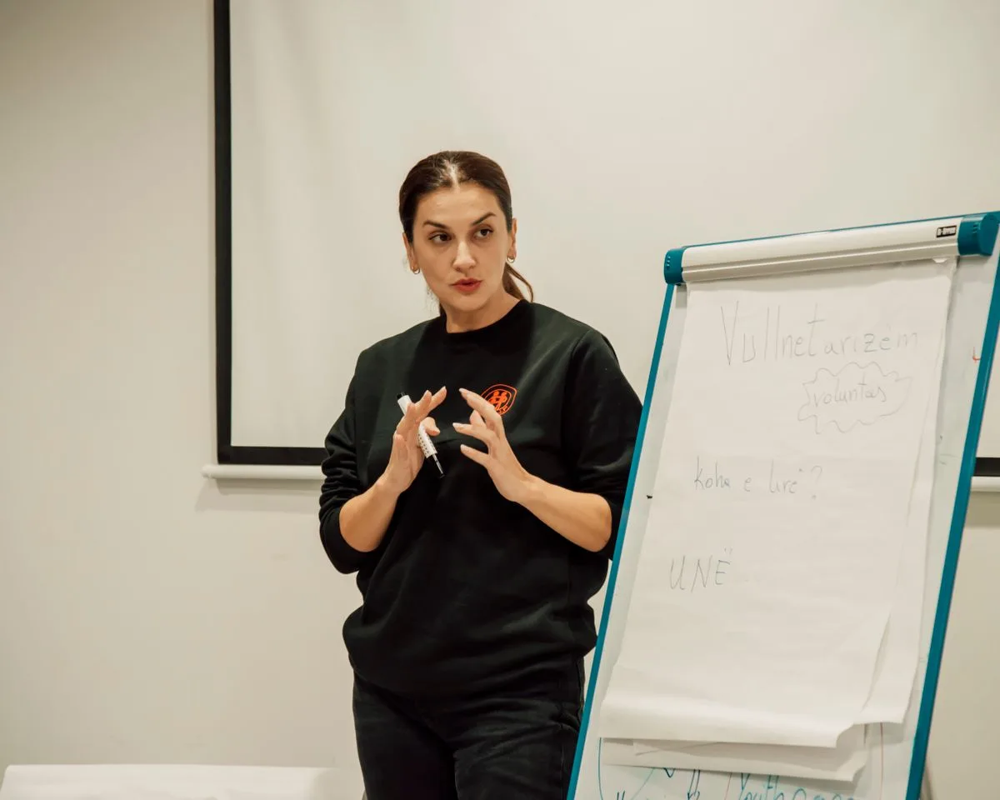
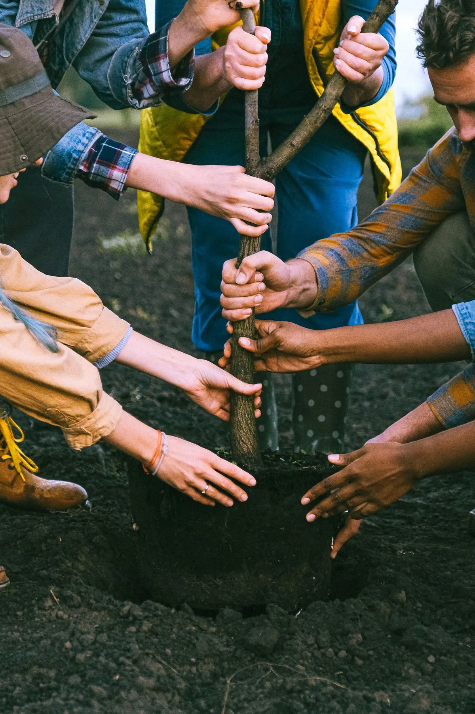
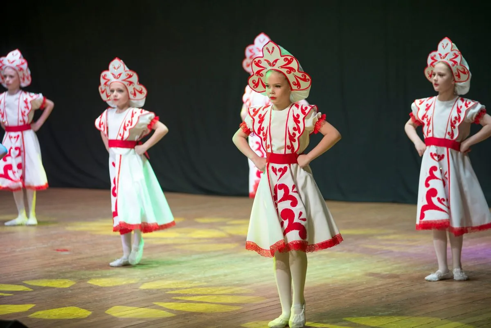
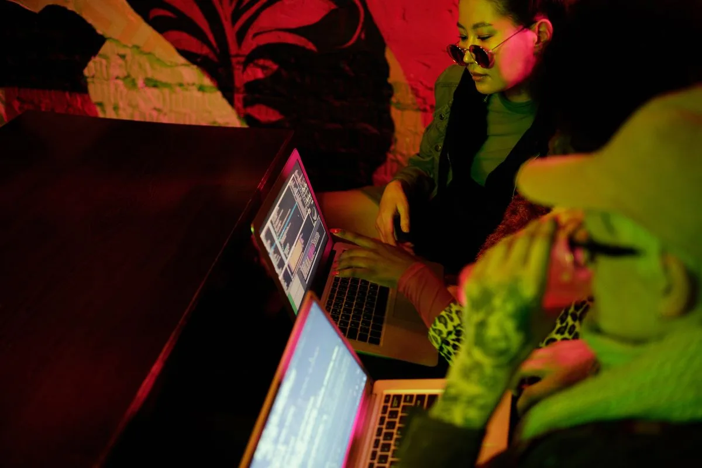

Erasmus+
Erasmus+
Erasmus+PROGRAMI
ABAVRUPA BİRLİĞİ
ESCDAYANIŞMA
Gençlerin Avrupası
burada başlıyor

Nasıl katılırsın?

Yalova Erasmus Rehberi
adım adım incele →
Gönüllülük (ESC)
başvuruyu öğren →Bizi tanıyın
Ekibimiz
Elif Yıldız
Genel Koordinatör
Mert Demir
Proje Yöneticisi
Lena Hoffmann
Erasmus+ Sorumlusu
Jonas Becker
Gönüllülük Koordinatörü
Maria Papadopoulou
İletişim & Medya
Dimitris Nikolaou
Saha Koordinatörü
Zofia Kowalska
Ortaklıklar Sorumlusu
Marta García
Gençlik Programları
Pablo Ruiz
Dijital İçerik Üretici
Ahmet Kaya
Gönüllü Eğitmeni
Tüm ekip rolleri tamamen uzaktan ve esnek çalışma esasına göre yürütülür. Sen de ekibe katılmak ister misin?
Avrupa ağımız
YouthTICK ekibi; Almanya, Türkiye, Yunanistan, Polonya ve İspanya'daki gönüllüler, koordinatörler ve ortak kuruluşlardan oluşan bir Avrupa ailesidir. Aşağıdaki sekmelerden ekibimizin bulunduğu ülkeleri keşfedebilirsin.
Ortak ülkelerimiz
tümünü gör →
01
Genel merkez
Yalova
Merkez
Erasmus+
Aktif ortaklık
2025'ten beri
8proje
4ortak
60gönüllü
Keşfet →

Öncelikli bölge
Almanya

Atina
Yunanistan

Varşova
Polonya
Ortaklık durumu
tümünü gör →
1.
2025 / 2026 dönemi
★
Almanya — Öncelikli Ortak
daha fazla bilgi →
2025 / 2026 dönemi
Türkiye — Merkez Ofis (Yalova)
daha fazla bilgi →Rakamlarla YouthTICK
tümünü gör →
Gençliğin gücüne inanan bir hareket
YouthTICK; gençleri ülkelerin ötesinde buluşturan, Erasmus+ ve Avrupa Dayanışma Programı üzerinden somut fırsatlar üreten bağımsız bir gençlik organizasyonudur. Hayalimiz, her gencin —nerede doğduğuna bakılmaksızın— öğrenme, üretme ve söz söyleme şansına sahip olduğu kapsayıcı bir Avrupa. Yalova'dan başlayıp kıtaya uzanan köprüler kuruyor; eğitim, gönüllülük ve iş birliğiyle gençlerin sesini yükseltiyoruz.
Bizi tanı →Neye inanıyoruz

Katılım: gençler sadece izleyici değil, karar verici
Keşfet →
Kapsayıcılık: herkese eşit fırsat, kimse geride kalmasın
Keşfet →
Sürdürülebilirlik: bugünün gençliği, yarının dünyası
Keşfet →
Kültürlerarası diyalog: farklılıkların buluştuğu yer
Keşfet →
Dijital okuryazarlık: bilinçli, güvenli ve üretken gençlik
Keşfet →Yerelden Avrupa'ya: köprü kuran iş birlikleri
Keşfet →Yerelden başlayıp Avrupa'ya uzanan bir gençlik hareketi olarak derneklerle iş birliği yapıyor, ayrımcılıkla mücadeleyi merkeze alıyor ve gençlerin sürdürülebilir bir gelecek kurmasına alan açıyoruz. Bir fikrin, bir hayalin ya da sadece merakın varsa; gerisini birlikte halledelim. Harekete sen de katıl.

Öne çıkan projeler
Yazılar & içgörüler

Erasmus+ 2026 çağrıları: gençler için hangi kapılar açılıyor?
Oku →Karar masasında gençler: katılım neden geleceği şekillendirir?
Oku →Yalova'dan Avrupa'ya: ilk değişimine çıkan gençlerin günlüğü
Oku →
Dijital vatandaşlık: ağ çağında bilinçli ve güvenli gençlik
Oku →Bir yıl, yeni bir ülke: gönüllülerin (ESC) kendi anlatımıyla
Oku →
Daha yolun başındayız. Birlikte büyüyoruz.
1 - 10
YouthTICK kuruldu: ilk kıvılcım
Keşfet →2 - 10
İlk Erasmus+ başvuruları hazırlandı
Keşfet →3 - 10
Almanya ile öncelikli ortaklık kuruldu
Keşfet →5 - 10
Geleceğin Kentleri kavram aşamasında
Keşfet →6 - 10
Sürdürülebilir Gençlik planlanıyor
Keşfet →8 - 10
Yunanistan, Polonya ve İspanya keşfi
Keşfet →10 - 10